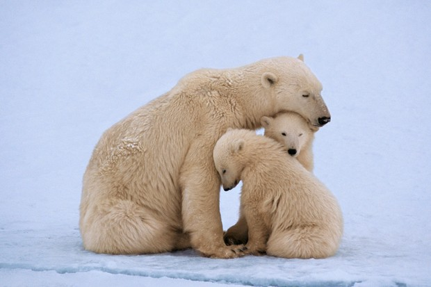
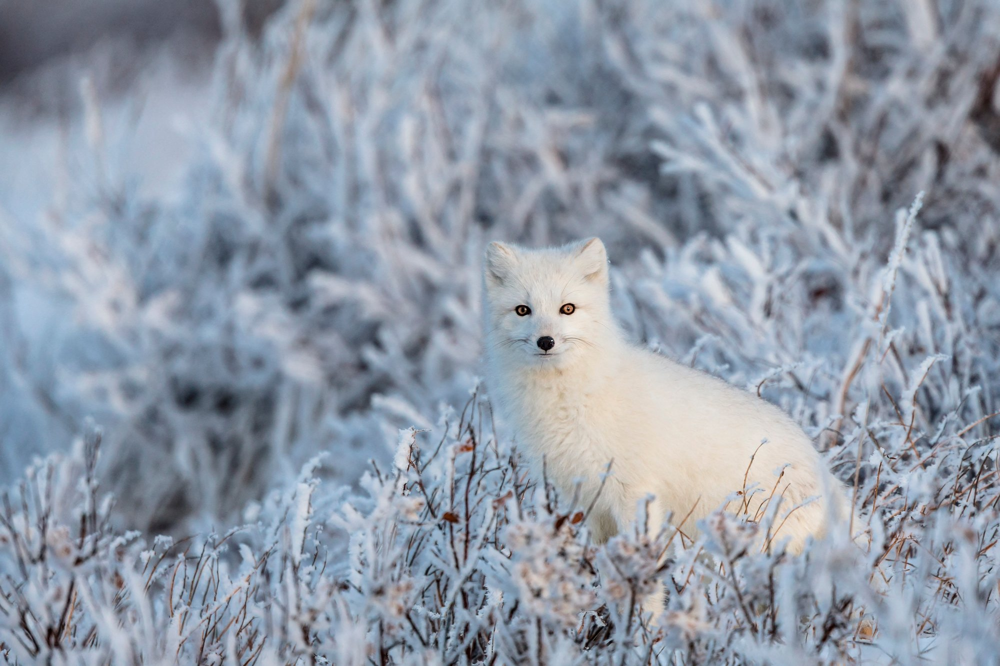
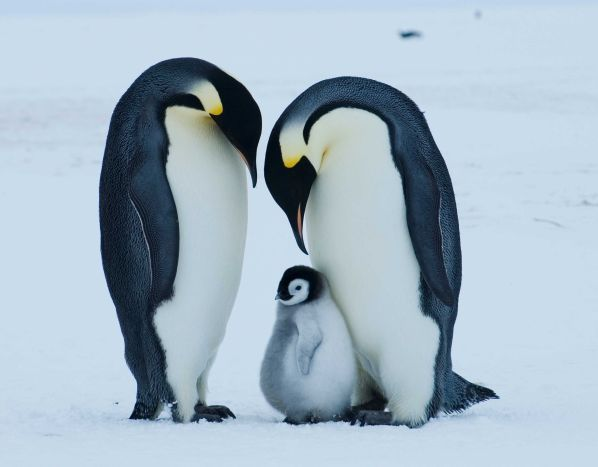
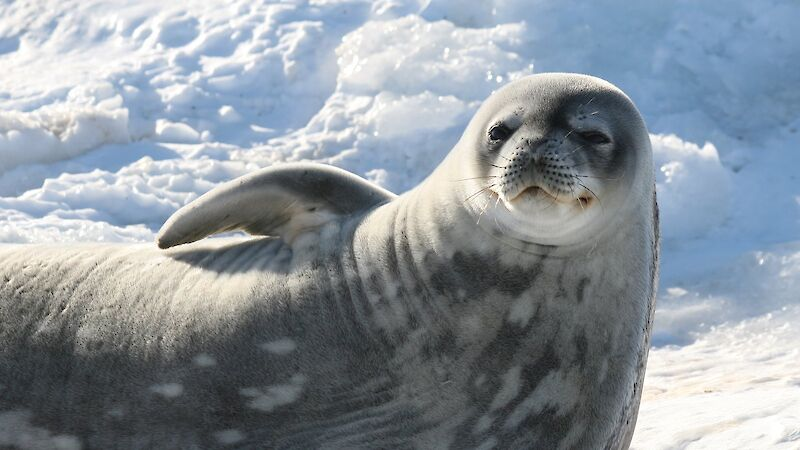

Sarkvidékeknek nevezzük az égitesteknek azokat a felszíni régióit (más néven poláris régiók), amelyek az adott égitest forgástengelyéhez közel esnek. Ezek a területek azért érdemelnek különleges figyelmet (és ezért is kapnak gyakran külön elnevezést), mert a területen az égitest más zónáitól jelentősen eltérő fizikai folyamatok és környezeti feltételek uralkodnak, amelyek vagy magából a forgásból, vagy a forgás és más fizikai jelenség kölcsönhatásából következnek.
Arktisz állatvilága

Jegesmedve
A jegesmedve (Ursus maritimus, korábban Thalarctos maritimus) a ragadozók rendjébe, ezen belül a medvefélék családjába tartozó, az Északi-sarkvidéken élő emlősfaj, rendjének második legnagyobb tagja. A jegesmedve elterjedési területe az Északi-sarkvidék jégmezőinek déli része. A legtöbb jegesmedve szinte sohasem teszi a lábát igazi szárazföldre, többségük egész életét a sarkvidék befagyott vizein, a lassan sodródó jégmezőkön tölti. Csak a párzásnál mennek stabil helyre.A jegesmedve szinte állandóan vándorúton van, s emiatt még saját territóriumot sem tart. Ezen nem is csodálkozhatunk, hiszen a jégmezők nemigen szolgálnak bőséges táplálékkal, és viszonylag nagy utat kell megtenniük az állatoknak ahhoz, hogy napi táplálékukat beszerezzék. Zsákmány után kutatva akár napi 70 km-es távolságot is megtesznek. Míg sok más medvefaj étrendjén igen jelentős a növényi eredetű táplálékok szerepe, a jegesmedve csak a sarki nyár hónapjaiban fogyaszt egy kevés zuzmót, mohát vagy bogyót, de azt is csupán étrendi kiegészítésként. Táplálékának zöme állati eredetű, s mivel a sarkvidék zord körülményei közt nemigen válogathat, szinte mindent megeszik. Ez a hatalmas, talán lomhának tűnő állat nagy ügyességgel halászik, ha pedig vadászik, kitartóan üldözi zsákmányát. A hal mellett egyik kedvenc táplálékát a fókák képezik, de olykor madarakat és rénszarvasokat is zsákmányul ejt, sőt a dögöt sem veti meg. A jegesmedve egyébként az északi sarkvidék jégmezőinek csúcsragadozója, természetes ellensége jóformán nincsen. A kardszárnyú delfinen, a nagy ámbrásceten és a grönlandi cápán kívül talán csak a rozmárok hatalmas agyarai jelentenek számára veszedelmet, rozmár azonban legfeljebb csak akkor támad jegesmedvére, ha a fiatal rozmárokat védi. A jegesmedvék kitűnő úszók. Úszás közben akár a tíz kilométeres sebességet is elérhetik. Fejjel előre ugranak bele a vízbe, mint a kutyák, és úszás közben a kutyaúszáshoz hasonlóan csak mellső lábukat használják, hátsó lábukat maguk után húzzák. Nyitott szemmel merülnek a víz alá, s ott akár két percig is kibírják levegővétel nélkül. A jegesmedve fő tápláléka a fóka, jóllehet általában csak a fókazsírt, a bőrt és a belsőségeket eszi meg, a húst nem. Egy léknél áll lesben vagy lopakodva közelíti meg áldozatát, amikor a fókacsapat a jégen napozik. Mancsával végzetes csapást mér a fóka vékony koponyájára. Nyár végén, ősz elején a jegesmedvék bálna- és rozmártetemek után kutatnak a partvidéken. Olykor tíz-húsz jegesmedvéből álló csoportot lehet megfigyelni, amint tetemekből lakmároznak. Ebben az évszakban nagyobb kiterjedésű szárazföld áll rendelkezésre a vadászatra, így a jegesmedvék táplálkozása is változatosabb, hiszen szárazföldi emlősöket is esznek, például rénszarvasokat is.

Sarki róka
A sarki róka (Vulpes lagopus, Alopex lagopus) az Északi-sarkvidék szép fehér, a hóban kiváló rejtőszínű bundájáról ismert ragadozója a kutyafélék (Canidae) családjából. Egyes rendszertanok szerint nemének egyetlen faja; mások a Vulpes, illetve a Canis nembe sorolják. Észak-Amerika és Eurázsia északi területein, valamint Grönland és Izland szigetén fordul elő, a hideg, fátlan tundrák jellegzetes állatfaja. Gyakorta a vízpartok közelében tartózkodik. Elterjedési területének nagyságát a jégpáncél kiterjedése és a rendelkezésére álló táplálékmennyiség is befolyásolja. A sarki rókák meglehetősen kis termetű állatok: magasságuk 25–30 centiméteres, testhosszuk pedig átlagosan 55–70 centiméter hosszú, amihez körülbelül 30 centiméteres farok kapcsolódik; testtömegük 2,5–8 kilogramm között mozog. Füleik a hőleadás csökkentése érdekében meglehetősen kicsik, és egész testüket dús szőrzet borítja. Még talpuk is szőrös, innen ered a faj tudományos neve (lagopus = nyúllábú).A sarki rókát tömött bunda borítja, melyet évente kétszer vált. Két természetes színváltozat ismert, a „fehér” és a „kék”. A „fehér” változat a domináns, a vadon élő állomány 99%-a telente hófehér, nyaranta viszont világos szürkés barna, a hasi tájékon fehéres szürkébe hajlóan. Az elsősorban szigeteken elterjedt „kék” árnyalatú egyedek telente ezüstös szürkéskék, nyaranta csokoládébarna szőrzettel rendelkeznek. A sarki rókák alapvetően más állatokra vadásznak, táplálékuk zömét lemmingek teszik ki. Előfordulási területük kiterjedése és példányszámuk is nagyban függ a rendelkezésre álló rágcsálók mennyiségétől. A lemmingek mellett sarki nyulakat, madarakat és tojásaikat, illetve dögöket – többek között az alkalomadtán rá is vadászó jegesmedve táplálkozásának maradékait – fogyaszt. Március-áprilisban a gyűrűsfókák hóba vájt gödrökben hagyott borjaira is vadászik. A nyári időszakban igyekszik minél több zsírt felhalmozni, az ínséges téli hónapokban ez tartalékként és szigetelésként egyaránt nagy szolgálatot tesz neki. Az emberiség érdeklődését régen felkeltette a gyönyörű, tömött sarkiróka-bunda, ezért a fajt mindig is intenzíven vadászták. A 19. századtól kezdve telepeken is tenyésztik őket, melyek az eredeti élőhely közelében, az északi területeken vannak, mert délebbre romlik a bunda minősége. Egyes területeken (elsősorban Izlandon) a farmerek vadásszák, mert károkat okoz a juhállományban. Az állatvédő szervezetek tiltakozása ellenére a szőrméért folyó rókatenyésztés a mai napig virágzik, de a faj vadonbeli állományait immár sok helyütt törvény védi. Az elszigetelt területeken élő állatok a híradások szerint rendkívül kíváncsiak, gyakran a kutatók közvetlen közelébe merészkednek. Állatkertekben gyakori, rendszerint szaporodik is.
Antarktisz állatvilága

Császárpingvin
A császárpingvin (Aptenodytes forsteri) a madarak (Aves) osztályának pingvinalakúak (Sphenisciformes) rendjébe, ezen belül a pingvinfélék (Spheniscidae) családjába és a Spheniscinae alcsaládjába tartozó faj.[1] A tojó és a hím tollazata és testméretei megegyeznek egymással. Magasságuk eléri a 122 centimétert, míg testtömegük 22 és 45 kilogramm között mozog. Szárnyaik, hátuk és fejük fekete színű, mely élesen elválik testük alsó részétől, amelyet fehér színű tollazat borít. Mellkasi részük felső része halványsárga, nyakuk és fejük oldalsó része sötét, élénk sárga színű. Akárcsak a többi pingvinfaj, a császárpingvin is repülésre képtelen madár. Teste ugyanakkor áramvonalas, valamint szárnyaik lekerekítettek és inkább evezőlapátként funkcionálnak, mivel e madarak a tengeri életmódhoz alkalmazkodtak. A császárpingvinek táplálékát túlnyomórészt halak alkotják, ám rákokat (pl. krilleket) és fejlábúakat (pl. kalmárokat) is fogyasztanak. Vadászat közben e pingvinfaj egyedei akár több mint 20 percig is képesek egy légvétellel a víz alatt maradni, miközben elérhetik az 500 méteres mélységet. Több tulajdonságuk is rendkívüli módon alkalmazkodott a víz alatti életmódhoz, ilyen például a megerősödött hemoglobinjuk, amely lehetővé teszi az oxigénfelvételt nagyobb mélységekben is, valamint tömör csontjaik megakadályozzák, hogy a mélyben a tengervíz okozta nyomás összeroppantsa csontjaikat. A pingvinek képesek lecsökkenteni a metabolizmust, valamint a nem létszükségletű testfunkcióikat. A császárpingvin az egyetlen olyan pingvinfaj, amely az Antarktiszon költ a téli időszakban. E madárfaj egyedei akár 50-120 kilométert is megtesznek táplálkozóhelyeik és költőhelyük között a csupasz jégen. Költőhelyeik kolóniákat alkotnak, melyek akár a több ezres nagyságrendet is elérhetik. A tojó mindössze egyetlen tojást rak le, melyet a hím tart melegen, amíg a tojó elmegy táplálékért. A vadon élő császárpingvinek jellemzően a húsz évet is megérhetik, ám egyes megfigyelések alapján vannak olyan egyedeik is, melyek elérik az ötvenéves kort, vagy még idősebbek is ennél. Az Antarktiszon költenek, akkor, amikor javában tombol a tél, (Ez −40 °C hideget jelent, és 130 km/h-s viharokat.) A többi pingvinfaj a tél elől ilyenkor északabbra húzódik. Az Antarktiszt óriási kiterjedésű jég veszi körül, mivel befagy az óceán. A császárpingvin elterjedési területe a Déli-sark körül a déli szélesség 66°-a és a déli szélesség 77.°-a közti területre terjed ki. Közel minden alkalommal olyan helyet választ magának költés céljából, amely nem a mozgó jégtáblákon helyezkedik el. A tengerparttól nem távolodik el 18 kilométernél messzebbre, mikor költőhelyét kialakítja. A költőkolóniák gyakran olyan helyen fordulnak elő, ahol sziklák, vagy jégfalak, jéghegyek védelmet nyújtanak a metsző antarktiszi szél heves lökései elől. Három állandósult költőkolóniáját ismerjük, melyek az Antarktiszi-félsziget és a Dion-szigetek közt (jelenleg nem használják), az Ausztrál Antarktiszi Területen a Taylor-gleccser végén, illetve leggyakrabban az Amundsen-öbölben helyezkednek el.

Weddell-fóka
A Weddell-fóka (Leptonychotes weddellii) az emlősök (Mammalia) osztályának ragadozók (Carnivora) rendjébe, ezen belül a fókafélék (Phocidae) családjába tartozó faj. A Weddell-fóka élőhelye a déli sarkvidék parti vizeire korlátozódik, de a zajló jég határáig nem merészkedik el. E fóka állománya körülbelül félmillió egyedből áll. A Weddell-fóka hossza 300 centiméternél is nagyobb lehet. A nőstény testtömege körülbelül 500 kilogramm, a hím valamivel kisebb. A szőrzet a hátán csaknem fekete, hasán szürke árnyalatú, oldalán világosabb és foltokkal tarkított. Bőre alatt vastag zsírréteg található, amely megvédi a fagytól. A fej a többi testrészhez képest aránytalanul kicsi. A vízi életmódhoz való alkalmazkodás során hátsó lába úszólábbá alakult. A szárazföldön kevésbé veszi hasznát. Születésekor a Weddell-fókabébi egy lanugónak (gyapjas szőr) nevezett barna vagy szürke színű, bolyhos szőrzetet visel, a hátán sötét csíkkal. Tömege 27 kilogrammig terjedhet, hossza körülbelül 1,2 méter. Testtömege a tápláló anyatejnek köszönhetően napi egy kilogrammal gyarapodik. A vízben magányos, a parton társas. Tápláléka halakból, tintahalakból és krillből áll. Vélhetően 25 év feletti kort is elérhet. A földfelszínen 34-féle, emberi fül számára is hallható hangot képes kiadni, víz alatt pedig 9-féle hangot azonosítottak az ultrahang tartományban, ezek trillázások, sípolások és idegen hangzású csipogások. A kiadott hangok frekvenciája mind meghaladja a 21 kHz-et, 30 vagy akár 49,8 kHz is lehet. Egyszerre több frekvenciájú hangot is képes kiadni. A kutatók még nem állapították meg ezeknek a hangoknak a funkcióját, ami lehet echolokáció, mivel ez a fókafaj akár 600 m mélységbe is képes lemerülni vadászat közben, így ott, a sötétben ez a képesség hasznos lehet (amit a delfinek és denevérek is használnak). Más fókafajokban egyelőre még nem figyelték meg ultrahangok kiadását. Az ivarérettséget 3–6 éves korban érik el. A párzási időszak októberben és novemberben van. A megtermékenyített petesejt néhány hónapig a nőstény méhében pihen, mielőtt fejlődésnek indulna, így az utód a megfelelő időben, az antarktiszi tavasz idején jön a világra. A vemhesség 11 hónapig tart. Rendszerint csak egy utód jön a világra.